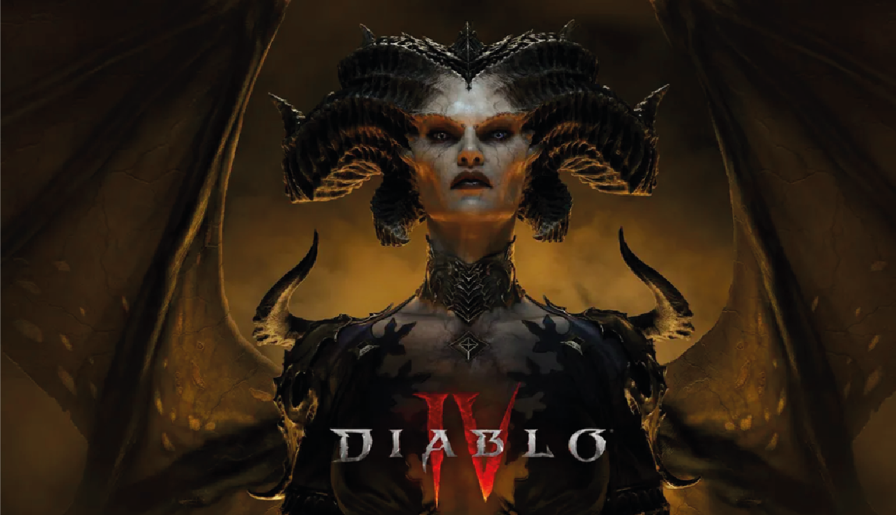
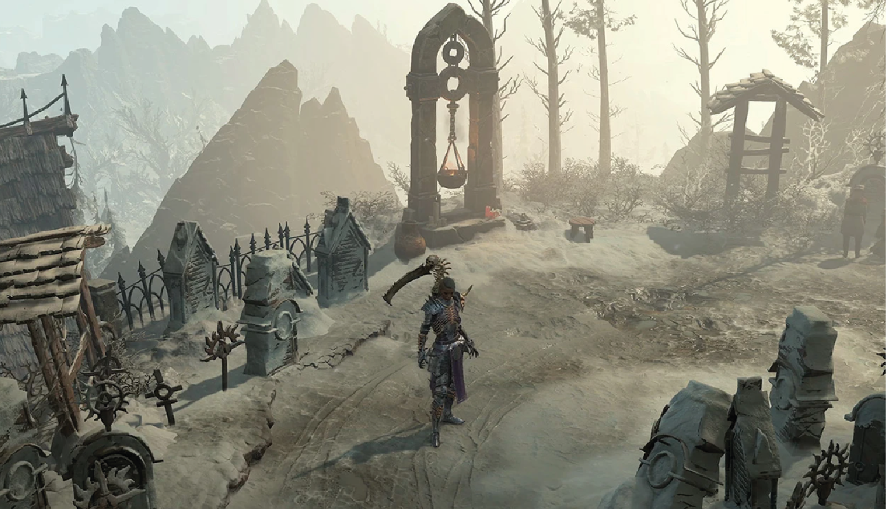
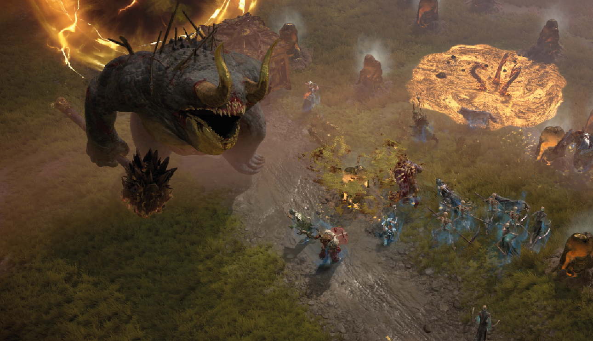
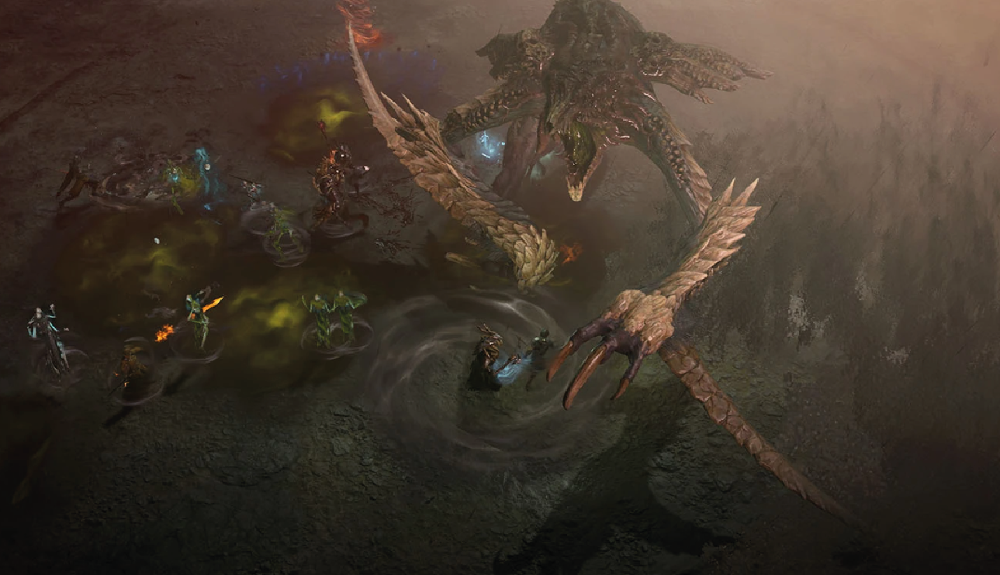

Diablo 4: ¡Regocijaos ante el glorioso regreso de Lilith!
Las puertas del infierno se han abierto y hemos podido jugar a Diablo 4, la nueva entrega de la saga de Blizzard que llega a PS5, PS4, Xbox Series X|S, Xbox One y PC. ¿Se trata del mejor juego de la franquicia hasta el momento? Os contamos si el juego asciende a los cielos o cae en el averno con nuestro análisis.
Más de 25 años han pasado desde el lanzamiento del primer Diablo, con el que Blizzard sentó las bases de una saga y un género que ya han hecho Historia, y más de tres años desde que fue presentado Diablo 4, que llega a PS5, PS4, Xbox Series X|S, Xbox One y PC el próximo 6 de junio.
Y aunque parezca mentira, por fin podemos decir que ya hemos jugado al completo a Diablo 4, el regreso por todo lo alto de una saga que ya iba necesitando una nueva entrega que la volviese a situar en el mapa, y ya estamos en posición de daros nuestra opinión en nuestro análisis de Diablo 4.
Un análisis de Diablo 4 sin spoilers, que actualizaremos más adelante para añadir algunos aspectos que, por embargo, no podemos comentar en este momento. Pero aún con todo, vamos a contaros lo más importante y cómo es esta llegada de Lilith a Santuario.
Lo cierto es que no podemos dejar de sentir algo de vértigo ante la magnitud del gran lanzamiento de Blizzard, una obra que aspira a convertirse en uno de los grandes juegos de 2023.
El análisis de Diablo 4 para PS5, PS4, Xbox Series X|S, Xbox One y PC de re-play:
- La historia y mundo de Diablo 4
- El gameplay de Diablo 4
- La progresión, endgame y sistemas de Diablo 4
- Nivel de dificultad de Diablo 4
- ¿Cuántas horas de juego dura Diablo 4?
- Apartado técnico de Diablo 4
- Cuánto cuesta Diablo 4 y dónde puedes jugarlo
- Nota: lo mejor y peor de Diablo 4
Diablo 4 trae una historia épica y un Santuario como nunca has visto
Una de las grandes bazas de Diablo 4 es su campaña. No entraremos en el terreno de los spoilers para que disfrutéis del camino, pero ya dejamos claro que esta trama es de lo mejorcito del juego. Lilith se presenta como una villana espectacular y la narrativa es más profunda y oscura.
Os recomendamos repasar la historia completa de la saga Diablo para estar frescos ante esta nueva epopeya con el enfrentamiento de Lilith e Inarius en Santuario, ya que hay un cúmulo de detalles y referencias a pasadas entregas y lore general de la franquicia.
Blizzard nos presenta una historia más adulta, profunda y con más matices de los esperados centrada en Santuario, lo que es un completo acierto por su parte, mientras que al mismo tiempo logra establecer algo así como una especie de relevo generacional de cara al futuro.
Nuevos personajes se forjan, viejas caras y nombres reaparecen ampliando de la mejor manera posible el fantástico universo de Diablo. Aunque la compañía no se aleja de una de las tendencias más asentadas de la saga: jugar al ratón y al gato, ya entenderéis la razón.
Si bien es cierto que la trama puede verse alargada artificialmente en algunas partes y que el final podría haber dado algo más de sí, esta nos ha convencido sobradamente, más que la de Diablo III, puesto que está mucho mejor cimentada. ¡Y menudas cinemáticas se gasta Blizzard!
Jugabilidad y gameplay de Diablo 4 en PS5, PS4, Xbox Series X|S, Xbox One y PC
Aunque hacer turismo está bien, aquí hemos venido a destruir inmundas criaturas. La jugabilidad de Diablo 4 nos devuelve a esa adictiva fórmula de combate, farmeo y looteo que siempre ha sido el punto fuerte de la saga.
En estos términos de gameplay, la familiaridad con su propuesta clásica es evidente, pero esta entrega nos brinda pequeñas novedades sumamente acertadas. Ya sabéis que cinco clases nos esperan esta vez: Bárbaro, Hechicera, Pícara, Druida y Nigromante.
Tras jugar con la Pícara en la beta, nos hemos decantado por la fuerza bruta de la Bárbara para nuestra partida principal, pese a que también hemos tenido tiempo de probar Hechicera o Nigromante...
Cada una de las clases se siente bien y ofrece una experiencia jugable muy distinta, ya que cuentan con ventajas únicas y sistemas propios intransferibles. El bárbaro, por ejemplo, aplasta y basa su set de movimientos y habilidades en destruir a los monstruos cuerpo a cuerpo.
La Hechicera se centra en control de oleadas, la Pícara en agilidad y velocidad de movimiento, etc. Nada nuevo bajo el sol para aquellos que ya estén curtidos en la saga.
¿Cómo se estructura Diablo 4? Progresión, endgame y todo el contenido extra
¿Cómo se estructura Diablo 4? Progresión, endgame y todo el contenido extra
Jugar a una versión previa hace que aquí no vayáis a encontrar una valoración centrada en la optimización y servidores. En este apartado hemos presenciado fallos que desde Blizzard aseguran estarán solucionados en su estreno. Pero quien sabe. Aclarado este aspecto, pasemos a las entrañas de Diablo 4.
Y es que esta saga no solamente se sustenta en pulsar teclas y botones constantemente mientras nos abrimos paso ante las hordas demoniacas. La progresión y su personalización es importante y en Diablo 4 alcanza una nueva dimensión. Más allá de poner "guapetes" a nuestros personajes, lo que importa aquí es saber a qué vamos a dedicar la experiencia farmeada. El nuevo sistema de habilidades y su árbol correspondiente hace que nos permitamos el lujo de dirigir a nuestro personaje hacia una especialización, varias o que sea un "poco de todo".
El escaldo de nivel de los enemigos vayamos a donde vayamos es otro añadido interesante que puede que genere división, pero que en nuestro caso hemos encontrado acertado, ya que siempre se ofrecerá un buen grado de desafío.
El looteo hace que la posible repetición del combate sea mucho más llevadera. ¿Quién se resiste a la posibilidad de obtener un peto legendario que de 5% de probabilidad de crítico con armas a dos manos? Nadie, lo sabemos. En términos generales, el dropeo de armas y armaduras está bastante balanceado y ofrece transmogrificación, mejoras y muchos más sistemas.
Se dice que se te ha visto por la calle vagando
Todo esto se puede hacer solo o en compañía de otros jugadores. Diablo 4 coge los mejores aspectos de los MMO para llevarlos a su territorio mediante eventos de mundo completamente opcionales, pero que brillan en cooperativo.
En Tears of the Kingdom no es así. Desde el principio del juego y hasta el final, el nivel de desafío es muy elevado; los enemigos golpean con fuerza y ni la protección de las grandes hadas es capaz de evitar que nos arranquen un buen puñado de corazones. Pero no se ha recurrido únicamente a aumentar el daño, también han rediseñado una serie de aspectos para mejorar el combate. Hay nuevos tipos de enemigos (los centaleones son un chiste al lado de los griock), algunos llevan protecciones que nos obligan a cambiar de arma o a aprovechar las propiedades elementales, los mandobles y las lanzas no interrumpen continuamente los ataques de los enemigos (de los más poderosos, al menos) y la ventana para hacer "parrys" y esquivas perfectas es mucho más reducida.
Sigue siendo posible parar la acción en cualquier momento para restaurar salud a base de comida o potenciar los atributos de Link temporalmente, pero también han pensado en eso y se han sacado trucos nuevos de la manga para complicarnos las cosas. En definitiva: Tears of the Kingdom es uno de los Zelda más difíciles.
Ira de hermanos, ira de diablos
En Nintendo estiman que completar The Legend of Zelda: Tears of the Kingdom centrándonos en la historia principal puede llevarnos unas cincuenta horas aproximadamente. Pero creemos que es un dato poco realista, pues en estos momentos nuestra Nintendo Switch indica que hemos jugado durante 115 horas (o más).
Ya os hemos explicado el motivo: es imposible seguir el camino principal sin desviarse porque siempre va a haber algo que llame nuestra atención. Siempre. Y por supuesto no estamos ni remotamente cerca de haber visto todo lo que ofrece Tears of the Kingdom, pues aún tenemos una tonelada de misiones secundarias pendientes, cerca de la mitad de santuarios por completar y una infinidad de zonas de los mapas que aún no hemos visitado.
Si tenéis pensado completar Zelda Tears of the Kingdom al 100%, aquí hay juego para meses.
Gráficos y sonido de The Legend of Zelda: Tears of the Kingdom
En lo que al apartado gráfico se refiere, Zelda Tears of the Kingdom supone un salto respecto a Breath of the Wild. No es un salto de gigante, pero es una mejora evidente. Donde más se aprecia es en la distancia de dibujado, pudiendo contemplar con más claridad elementos lejanos del escenario. También hay algún efecto nuevo (como las gotas de agua cuando Link se lanza a un cuerpo de agua), una leve mejora en las texturas y puede que un aumento general de nitidez. Quizás lo más impresionante a nivel técnico sea la ausencia de tiempos de carga, o mejor dicho, lo bien camuflados que están al cambiar entre los diferentes mapas.
Pero también es evidente que Tears of the Kingdom exprime Switch al máximo y que la consola, con sus seis años, no puede dar más de sí. El "popping" es constante, especialmente en el caso de enemigos y NPCs. Y pese a que la distancia de dibujado ha aumentado, sigue habiendo una capa blanquecina que cubre los escenarios lejanos, restándoles color y detalle. Pero el problema más grave de Tears of the Kingdom es el rendimiento: desde las primeras horas se puede advertir que acciones como mover la cámara mientras usamos la Ultramano provocan pequeñas ralentizaciones. Y al avanzar en la aventura, llegamos a zonas de Hyrule con una mayor carga gráfica en las que las ralentizaciones son más graves y habituales. En ningún momento llega al punto de interferir con la jugabilidad, pero es un problema demasiado evidente como para pasarlo por alto.
Nos atreveríamos a decir que el rendimiento de Tears of the Kingdom es peor que el de Breath of the Wild de lanzamiento... Pero eso también nos da esperanzas, porque si corrigieron los problemas del primero, no hay motivos para pensar que no sucederá lo mismo con la secuela.
Precio y plataformas disponibles
The Legend of Zelda: Tears of the Kingdom se pone a la venta para Nintendo Switch el 12 de mayo de 2023 a un precio recomendado de 69,99 € .
También se ha puesto a la venta una edición coleccionista de The Legend of Zelda: Tears of the Kingdom a un precio de 129,99 €.
Además de la caja con el cartucho de juego, esta edición incluye una caja edición coleccionista, un steelbook, un póster metálico ICONART, un setde cuatro pines y un libro de ilustraciones. Por desgracia la edición coleccionista es muy limitada, así que está agotada en todas partes desde los primeros días y en estos momentos es muy complicado hacerse con ella.
Perfeccionando la perfección
Seguro que muchos recordáis el tráiler de Breath of the Wild que se mostró durante el evento de presentación de Nintendo Switch, en enero de 2017.
Y no exagero ni un poco si os digo que he perdido la cuenta de las veces que lo he visto... Y que lo vuelvo a ver hoy y se me empañan los ojos. Porque es increíble; absurdamente épico. Y aunque siempre voy a ser un firme defensor de la historia de Breath of the Wild, más centrada en los personajes y en su desarrollo, es cierto que apenas hubo momentos en todo el juego que despertasen en mí las mismas emociones que ese tráiler.
Con Zelda Tears of the Kingdom, Nintendo ha repetido la jugada: hace tres semanas, publicaron un tráiler que estaba cortado exactamente por el mismo patrón: increíble, épico y con un saxofón capaz de elevar los niveles de expectación por encima de las nubes. La gran diferencia es que Tears of the Kingdom -el juego- me ha puesto los pelos de punta con sus situaciones épicas, ha hecho que gritase a la pantalla con sus sorpresas y ha conseguido que se me empañasen los ojos en los momentos más emocionantes. Exactamente como con el tráiler.
Y creo que por encima de todo, por encima de la apabullante cantidad de contenido, por encima de los mapas y las mazmorras con un diseño digno de ser estudiado y por encima de las mecánicas de las que van a surgir vídeos con locuras impensables durante los próximos cinco años, esa emoción es lo que buscamos en The Legend of Zelda y es lo que hace grande a Tears of the Kingdom.
Puntuación
Gráficos
Jugabilidad
Sonido
Duración
Un jugador
Multijugador
🟣 VALORACIÓN
Diablo 4 es el triunfal regreso de la saga. El juego logra traer de vuelta el oscuro estilo de Diablo II mientras hace gala de una buena narrativa, una jugabilidad tan adictiva como siempre y unas novedades interesantes. Solamente queda por ver cómo mantendrá Blizzard el juego, pero podemos decir que el comehoras ha regresado por todo lo alto.LO MEJOR
La historia y su narrativa. Todas las clases se sienten bien. Diseño artístico y mundo abierto de Santuario.
LO PEOR
Incertidumbre en cuanto a balance, progresión y estado de los servidores. "Poca" variedad de enemigos y eventos.